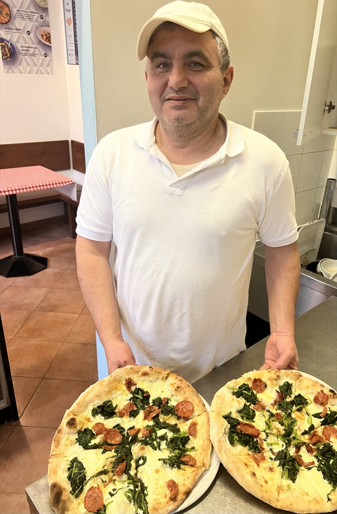
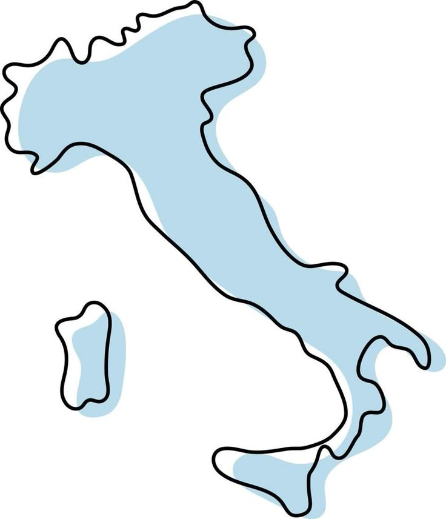

Dal 1997
Due righe, non un romanzo.
Prima di Como, Vincenzo ha girato l'Italia in cucina. Poi ha messo radici qui, in Via Carloni.

"Prima di mettere radici a Como, Vincenzo ha fatto il cuoco per anni in giro per l'Italia — in Abruzzo, a Roma, in Veneto, ad Amalfi. Nel 1997 ha aperto Arti in Pizza in Via Carloni, portando con sé quello che aveva imparato in ogni cucina: che la pizza si fa con le mani, ogni giorno, senza scorciatoie — e che l'accoglienza conta quanto l'impasto."
— così la raccontiamo noi, in attesa delle sue parole esatteIl percorso, prima di Como
Un mestiere imparato girando, non da un giorno all'altro.

1 2 3 4 5Oggi
Non ci accontentiamo. Cerchiamo sempre un modo per crescere, per migliorare — perché la pizza, per restare buona, deve restare viva.
1Abruzzocucina
2Romacucina
3Venetocucina
4Amalficucina
5Comodal 1997, Arti in Pizza